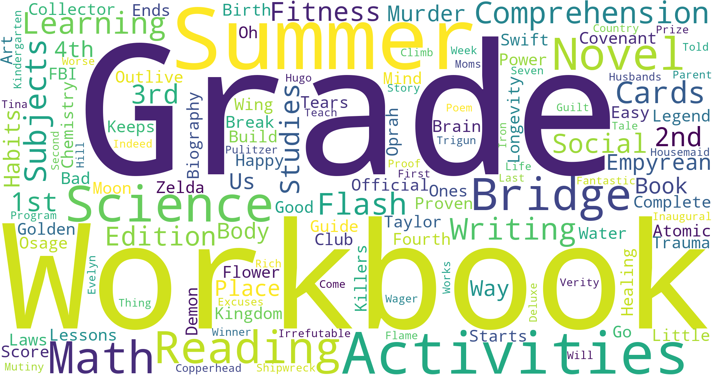

Amazon Books Best Sellers
Wed May 29th, 2023
15 min read
I had the opportunity to explore web scraping using Python to extract valuable information from the Amazon website. Specifically, I focused on scraping the data of the 30 best-selling books on Amazon. By leveraging Python's web scraping capabilities, I automated the process of collecting the book titles, authors, ratings, and other relevant details. Once I obtained the necessary data, I proceeded to visualize it using a word cloud technique. By analyzing the book titles and their frequency, I created a visually stunning word cloud representation. The word cloud provided a unique perspective, highlighting the most prominent and frequently occurring words in the titles of these best-selling books. The combination of web scraping and data visualization allowed me to gain a deeper understanding of the current literary landscape and the popular trends in the book market. It was an exciting journey of exploring the power of Python and its ability to extract and present meaningful insights from web data.
This is the code snippet that demonstrates the web scraping process for extracting data:
This is the code snippet that demonstrates the creation of a word cloud using Python:
And finally, we have this amazing and beautiful word cloud. 
Conclusion The word cloud visually represents the frequency of words in a given text or dataset, creating a captivating and informative display. By analyzing the size and arrangement of the words, we can gain insights into the prominent themes and topics within the text. The word cloud's visual appeal makes it an effective tool for presenting textual data in a visually engaging manner. With its vibrant colors and artistic layout, the word cloud adds a touch of creativity to our data visualization, allowing us to explore and communicate information in a unique and captivating way. Thank you for taking the time to read through this project. Your interest and engagement are greatly appreciated. I hope you found the information and insights shared here valuable and informative. If you have any questions, thoughts, or feedback, please feel free to share them. Your support and interest mean a lot. Thank you once again for being a part of this journey.